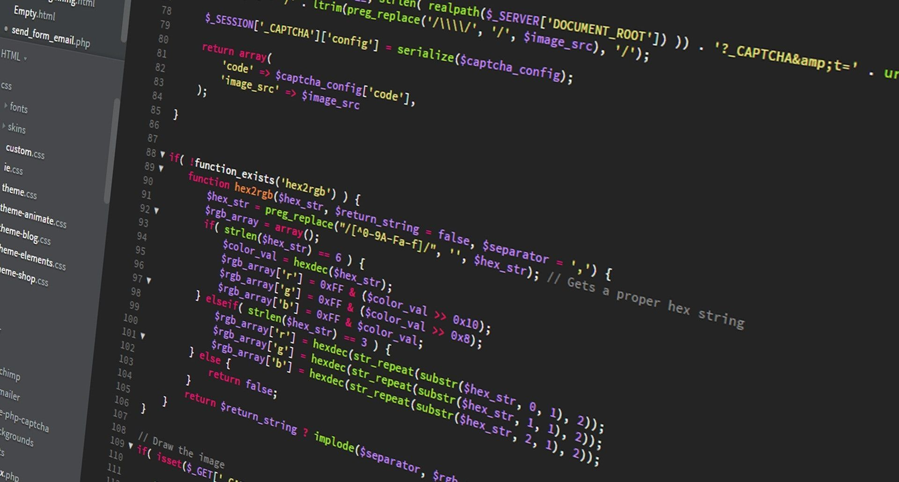
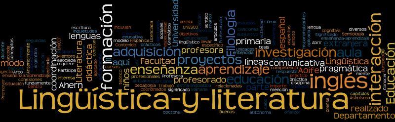
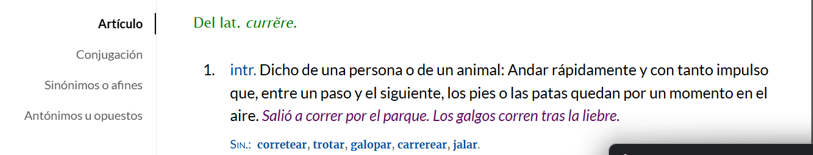
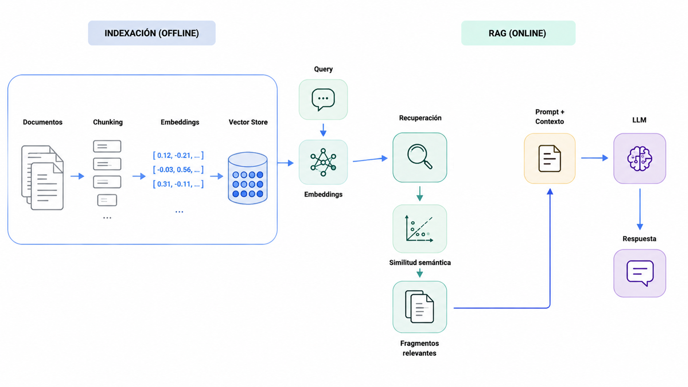
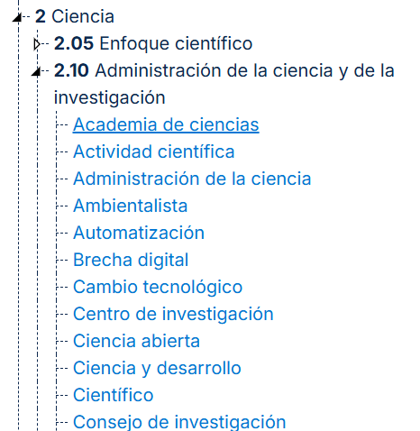
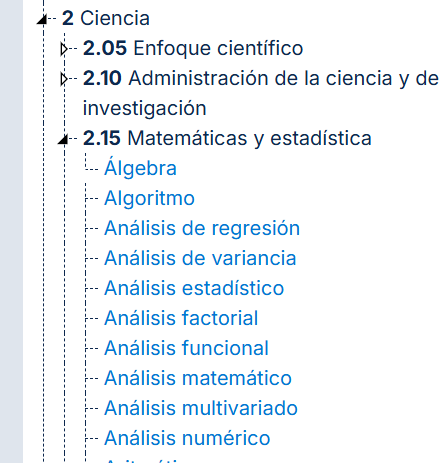
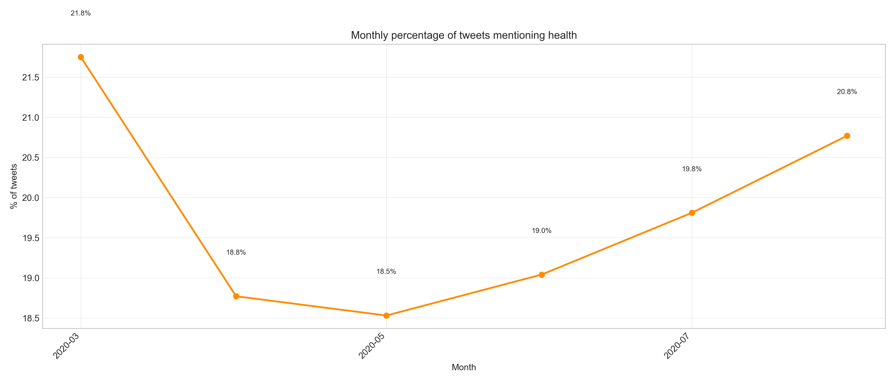
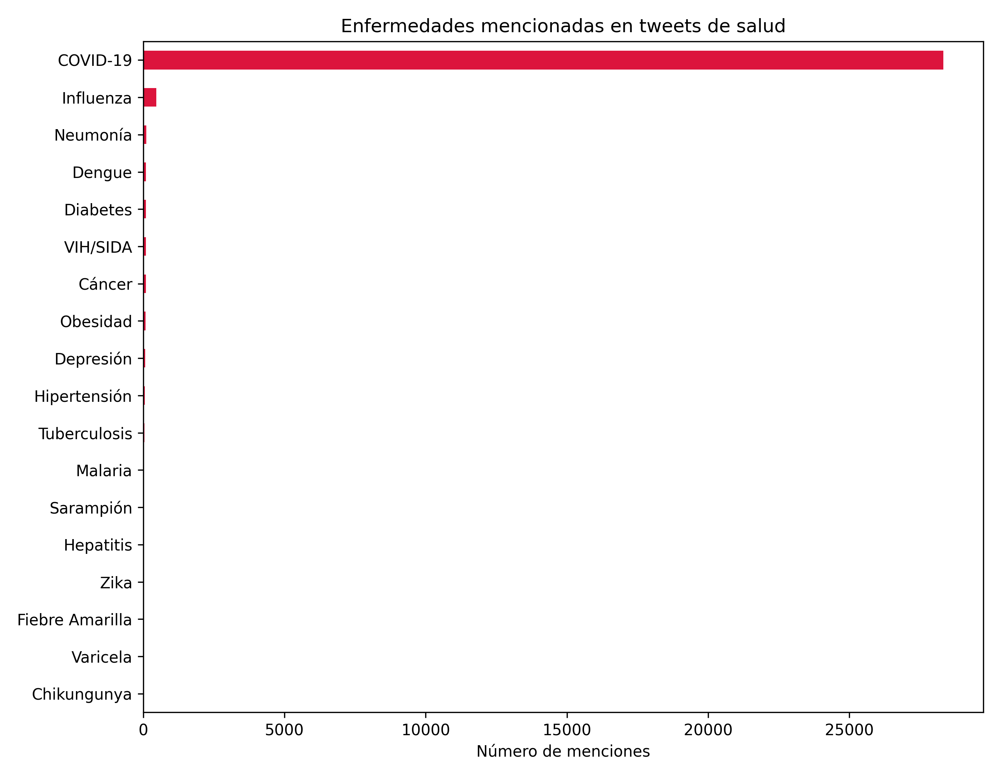
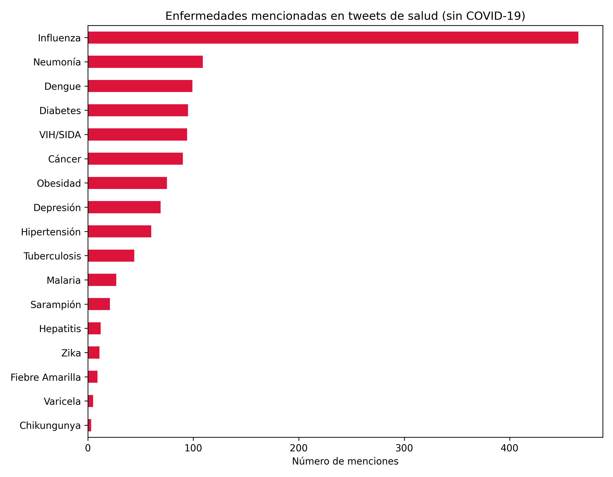
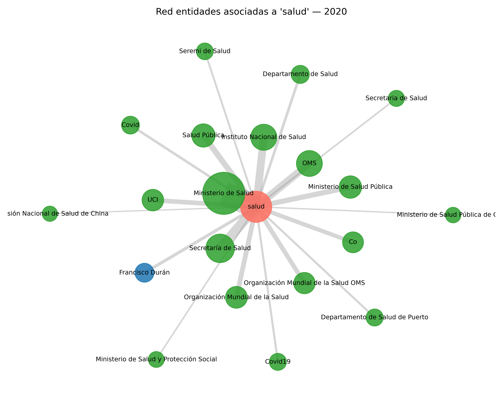

Objetivo del workshop
Convertir texto en datos analizables usando Python y mostrar cómo una metodología de NLP puede adaptarse a distintos dominios:
Columnas de opinión en medios colombianos.
Corpus en español con desafíos lingüísticos propios.
Aplicaciones en salud y análisis de publicaciones tipo Twitter/X.
La idea central
No venimos a mostrar un notebook: venimos a mostrar cómo se construye una metodología interdisciplinaria.
Ruta de dos horas
Antes de programar: leer el problema
Si les entregáramos 100.000 textos sobre política, ciencia, salud o cultura, ¿qué preguntas podrían responder con Python?
Preguntas posibles
- ¿De qué se habla?
- ¿Quiénes aparecen?
- ¿Cómo cambia el discurso en el tiempo?
- ¿Qué emociones o posturas circulan?
El desafío
El lenguaje humano es información no estructurada. Python nos ayuda a convertirlo en datos, pero necesitamos saber qué estamos transformando.
Tres textos, un mismo tema
“Necesitamos una reforma tributaria justa que reduzca la desigualdad y fortalezca la inversión social. El país no puede seguir cargando el peso sobre las mismas familias. #Colombia”
“Gobierno presenta nuevo proyecto de reforma tributaria ante el Congreso.”
“Otra reforma más. Siempre prometen cambios y al final nada mejora.”
Como humanos notamos: tema común, actores políticos, tono emocional, posición o valoración, palabras clave. Para un computador solo hay cadenas de texto: el reto es construir una representación útil.
Python no solo permite analizar números.
También permite estudiar cómo una sociedad argumenta, discute, nombra problemas y construye sentido a través del lenguaje.
El origen del procesamiento del lenguaje natural (PNL)

¿Por qué existe el procesamiento del lenguaje natural?
El origen del PNL
• 1944: Colossus Mark I
• 1946: ENIAC
• Computadores personales (IBM)
• Traducción automática
La Era de los datos masivos
En los años 2000, la potencia de la computación, la cantidad de datos masivos y el aprendizaje profundo cambiaron las reglas de juego.
¿Qué es una palabra?
¿Cuántas palabras diferentes ven aquí?
¿Qué es una palabra?
La perspectiva del algoritmo

La perspectiva de la lingüística

Tokens vs. lemas
Un token: forma de cada palabra o carácter como aparecen en el texto plano.
Un lema:
correr

Ambigüedad y homografía
Sin contexto lingüístico la ambigüedad es total.
Stopwords y entidades nombradas
Términos de alta frecuencia como “de”, “que”, “la”, “en”, “por”, etc.
Personas, lugares, organizaciones, fechas, cantidades.
Variación dialectal

¿Qué hacemos para analizar lenguaje desde la ciencia de datos?
Las decisiones críticas de PLN ocurren siempre antes del entrenamiento del modelo.
Herramientas NLP
“La pandemia y la pospandemia hacen visible la necesidad del conocimiento. De su gestión dependen las estrategias de detección, atención y contención del coronavirus, el desarrollo del talento humano calificado y de los insumos tecnológicos para la prevención de la enfermedad y su tratamiento; sin duda, la calidad de los sistemas de salud se encuentra relacionada con los niveles de desarrollo científico y tecnológico de los países.”
Herramientas NLP
[La] [pandemia] [y] [la] [pospandemia] [hacen] [visible] [la]
[La pandemia] [pandemia y] [y la] [la pospandemia] [pospandemia hacen] [hacen visible] [visible la] [la necesidad]
[pos] [##pan] [##demia] [hacen] [vis] [##ible] [necesi] [##dad]
Herramientas NLP
La pandemia y la pospandemia hacen visible la necesidad del conocimiento. De su gestión dependen las estrategias de detección, atención y contención del coronavirus, el desarrollo del talento humano calificado y de los insumos tecnológicos para la prevención de la enfermedad y su tratamiento; sin duda, la calidad de los sistemas de salud se encuentra relacionada con los niveles de desarrollo científico y tecnológico de los países.
Las palabras en rojo se eliminan por ser muy frecuentes y aportar poca información.
Herramientas NLP
el pandemia y el pospandemia hacer visible el necesidad de el conocimiento. de su gestión depender el estrategia de detección, atención y contención de el coronavirus, el desarrollo de el talento humano calificado y de el insumo tecnológico para el prevención de el enfermedad y su tratamiento; sin duda, la calidad de el sistema de salud se encontrar relacionado con el nivel de desarrollo científico y tecnológico de el país.
Herramientas NLP
conocimiento [ 0.18, -0.42, 0.07, 0.55, -0.31, 0.12, …, 0.09 ]
la calidad de los sistemas de salud [ -0.05, 0.33, 0.61, -0.14, 0.27, -0.48, …, 0.22 ]
Embeddings
| Doc 1 | Doc 2 | Doc 3 | |
|---|---|---|---|
| pandemia | 2 | 0 | 1 |
| necesidad | 1 | 1 | 0 |
| conocimiento | 0 | 2 | 3 |
| … | … | … | … |
| palabra n | … | … | … |
Cada palabra tiene un solo embedding. Ejm: Word2Vec [ 0.21, -0.35, 0.88, -0.04, …, 0.16 ]
La representación de una palabra puede variar según el contexto. Ejm: BERT
El banco aprobó el crédito para la vivienda. [ 0.42, -0.11, 0.63, …, 0.08 ]
Nos sentamos en el banco del parque. [ -0.19, 0.55, -0.07, …, 0.31 ]
Codificación de fragmentos enteros. “El banco aprobó el crédito para la vivienda.” [ 0.27, -0.14, 0.36, …, 0.19 ]
Propiedades de los embeddings

Tamaño ventana de contexto
¿Cuántos tokens máximo recibe el modelo?
Tamaño del vector
¿De qué tamaño queda el embedding? Ej: 1024, 2048, etc.
Idioma de entrenamiento
¿En qué idioma o idiomas fue entrenado el modelo?
Tipo de tarea
¿Para qué tarea fue optimizado el modelo? Ej: STS, Retrieval, Clustering.
BERTopic
“BERTopic is a topic modeling technique that leverages transformers and c-TF-IDF to create dense clusters allowing for easily interpretable topics whilst keeping important words in the topic descriptions.” — (Grootendorst, 2022)

LLMs · Large Language Models
Un sistema que, dado un contexto de palabras previas, asigna una distribución de probabilidad sobre la siguiente palabra.
“El agua del lago Walden es tan hermosamente ___“
Probable: azul, verde, transparente Improbable: refrigerador, esto
¿Qué pueden hacer los LLMs?Resumir, traducir, responder preguntas, generar código, analizar argumentos.
Un prompt es el texto que el usuario entrega al modelo para obtener una respuesta útil. El modelo genera tokens de forma iterativa condicionado en ese texto.
“P: ¿Quién escribió El origen de las especies? R:” → “Charles Darwin”
Temperatura: reescala las probabilidades (baja = más probable; alta = más diversidad). Top-k: conserva las k más probables. Top-p: conjunto mínimo cuya probabilidad acumulada supera p.
Alucinación: el modelo puede sonar coherente y seguro, pero no corresponder con los hechos reales.
RAG · Retrieval Augmented Generation

Imagen generada con ChatGPT
RAG · Retrieval Augmented Generation
Recuperación semántica de información para análisis de texto
La parte de recuperación de la arquitectura RAG inspiró una metodología para identificar menciones a las ciencias naturales de manera no literal en columnas de opinión.


La misma metodología, otro dominio
- Caracterizar cómo se habla de salud en un corpus de tuits en español.
- Identificar actores, instituciones, enfermedades y medicamentos frecuentes.
- Describir la evolución temporal y temática del subcorpus.
Distribución de autores

Evolución mensual

Quién habla de salud

Instituciones más mencionadas

Palabras y categorías gramaticales

Enfermedades más mencionadas


Medicamentos más mencionados

Entidades asociadas a “salud” en 2020

Cómo leer el grafo
- Nodo central: la palabra “salud”.
- Nodos azules: personas (PER).
- Nodos verdes: organizaciones (ORG).
- Tamaño y grosor = frecuencia de co-ocurrencia.
Hallazgos del caso
La conversación sobre salud se concentra en pocos autores e instituciones.
La actividad varía en el tiempo, con picos ligados a coyunturas de salud pública.
Cubre muchas subcategorías, enfermedades y medicamentos específicos.
Profundizar tópicos (BERTopic) por subcategoría · comparar salud con comportamientos protectores · explorar la relación entre cobertura mediática y comportamiento.
Manos a la obra: todo listo en Google Colab
Para llevar
- El texto puede convertirse en datos, pero sin decisiones.
- La lingüística ayuda a evitar interpretaciones pobres o erradas.
- Python permite escalar preguntas humanísticas y sociales.
- Una metodología de NLP puede adaptarse a columnas, tweets y salud.
- La interdisciplinariedad no es un adorno: es parte del método.
El lenguaje no es solo una columna de strings.
También es cómo una sociedad argumenta, nombra problemas y construye sentido. Gracias por acompañarnos.
¡Gracias!
BivianaDoraKarenAndrés
Escanea y déjanos tu feedback: nos ayuda a mejorar PyCon Colombia.
NLP en la práctica · PyCon Colombia 2026